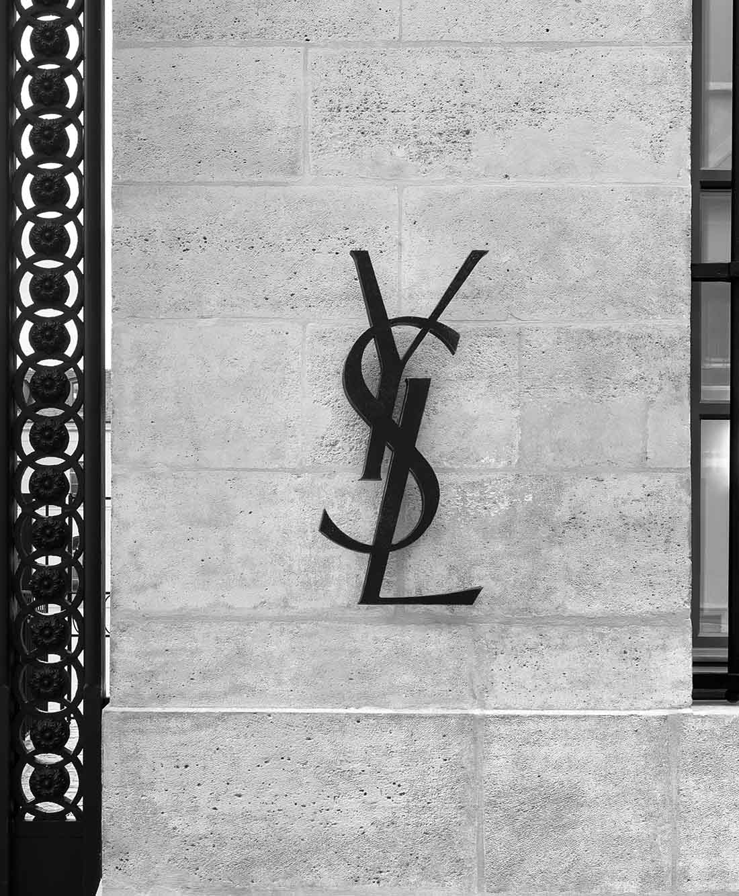
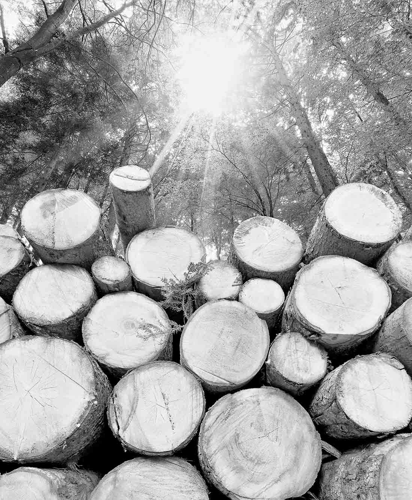
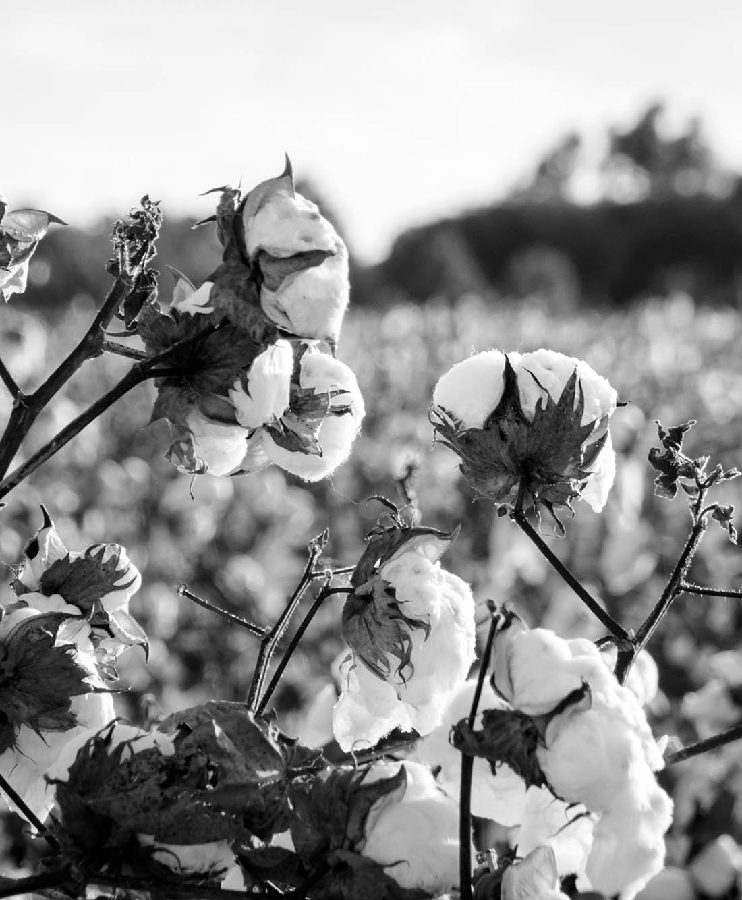
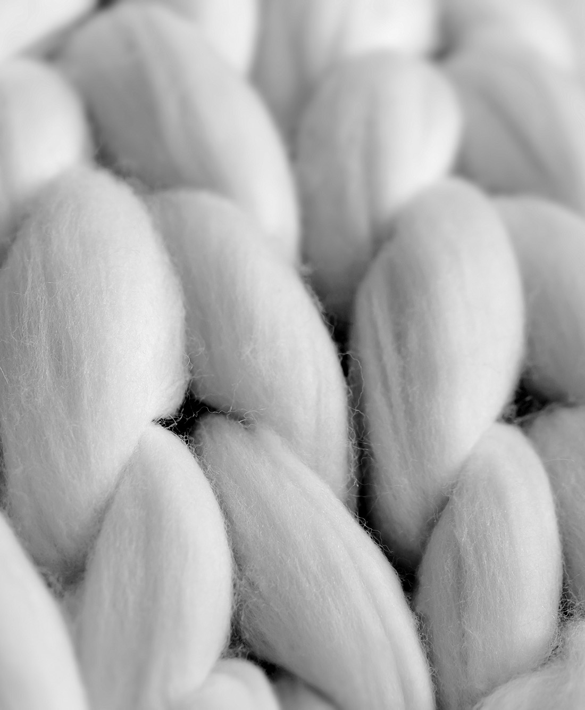
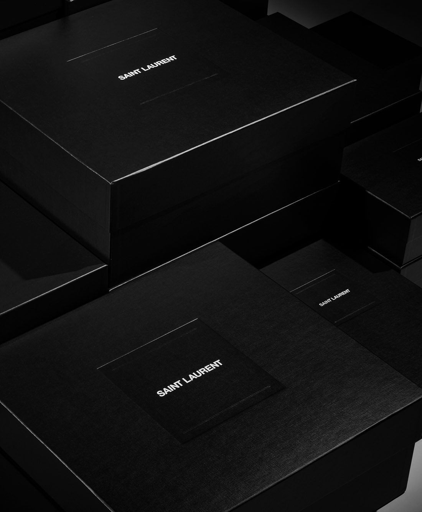
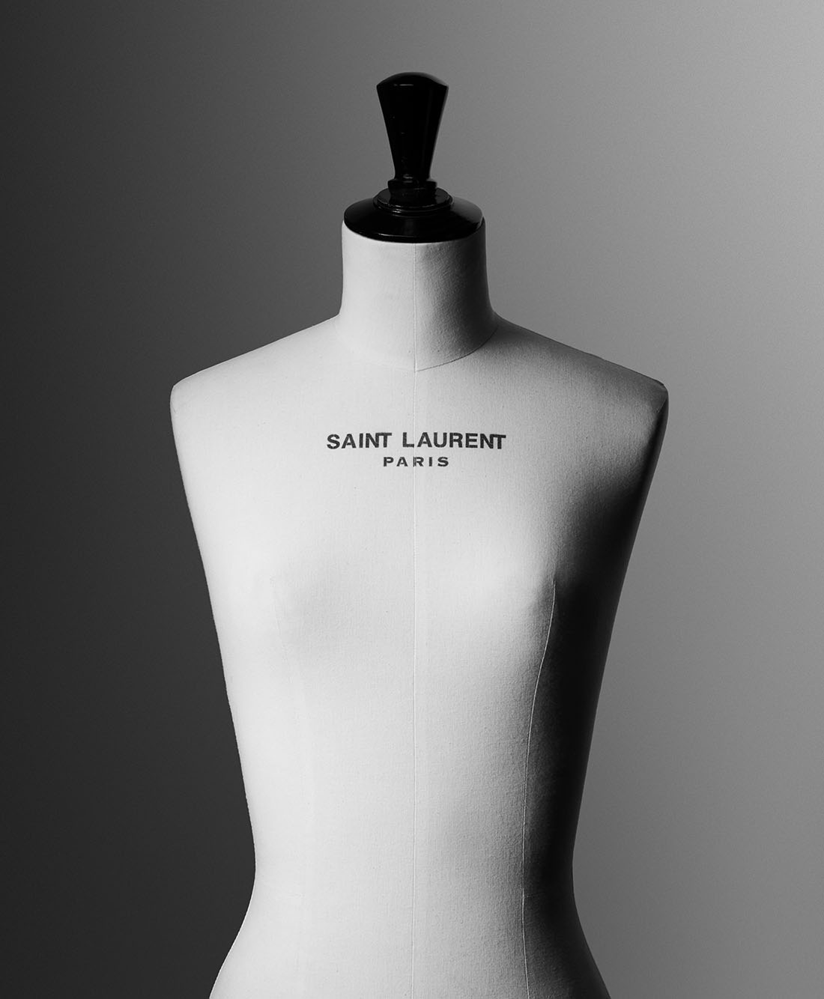
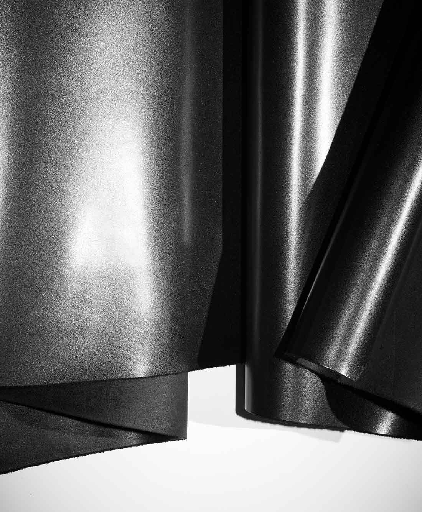
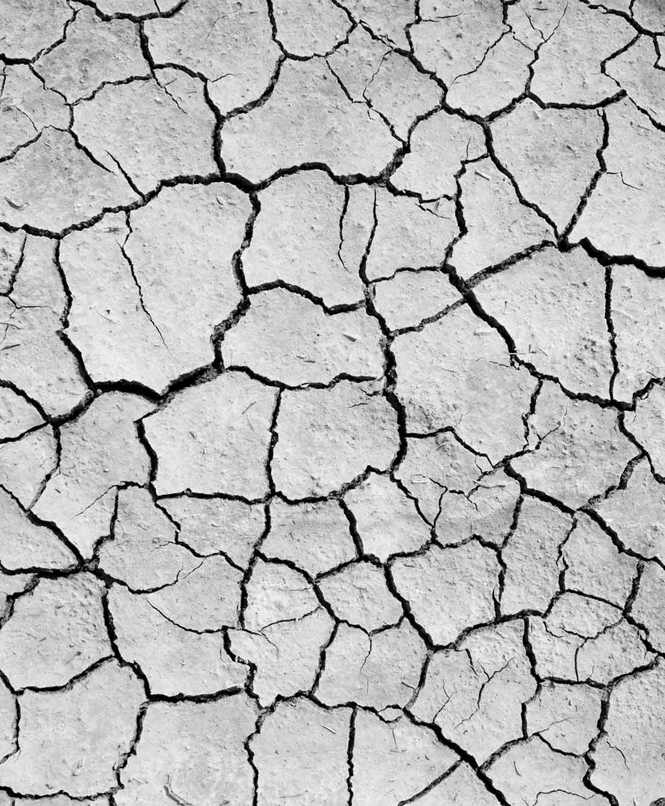

-
SUSTAINABILITY APPROACH SAINT
SAINT LAURENT’S APPROACH IS ROOTED IN A QUEST TO CONSTANTLY IMPROVE—IN MEANINGFUL AND MEASURABLE WAYS. RECOGNIZING THE COMPLEX NATURE OF SUSTAINABILITY
-

As part of the Sustainability Criterion
Kering Group, Saint Laurent is pursuing a multi-pronged strategy to establish a more sustainable and responsible concept of luxury. The House and its partners follow codes and standards developed and improved by Kering
-

Measuring sustainability effects
SAINT LAURENT strives to increase comparability by making the environmental impact of its activities visible and quantifiable through KERING's Environmental Income and Loss (EP&L) statement .
-

Sustainability House Operations
“At SAINT LAURENT, sustainability is a fundamental promise, not a marketing move, but the house spirit. ”CEO FRANCESCA BELLETTINI
-

Sustainable raw materials
SAINT LAURENT recognizes that thorough and consistent research on raw materials and their sources is critical to reducing our environmental impact.
-

SUSTAINABILITY SUPPLY
CHAINTO respect and protect human rights, SAINT LAURENT requires its suppliers to meet standardsThe House actively monitors compliance with strict standards through audits conducted by KERING or third-party auditors.
-

SUSTAINABILITY PRODUCTS
SAINT LAURENT products combine craftsmanship with sustainability. The House takes a holistic approach to design, development and manufacturing, responsibly selects materials and suppliers, ensures fair working conditions
-

Sustainability Circularity
SAINT LAURENT embraces the transition to a truly circular economy, recognizing the need to reimagine how resources are produced, used and reused. Change begins with leather goods.
-

Giving Sustainability : Water
“People need clean water to stay healthy and thrive. Water is the most basic essential element of life. Water is life.” Charity Founder Scott Harrison: Water